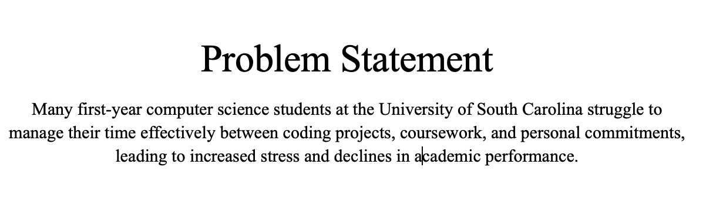
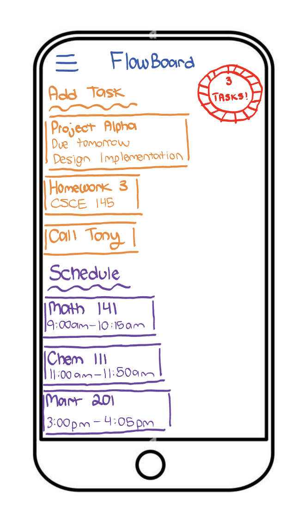

Highlighted projects
Problem Statement

Many
Affinity Diagram

Time management problems among first year CS students at USC stem from inaccurate time estimation, weak motivation, lack of digital organization tools, limited academic support, and declining well-being. These issues reinforce one another, leading to stress, missed deadlines, and lotver academic performance.
Sketches

The FlowBoard sketches illustrate a mobile app that helps students organize and manage their academic workload. Sketch 1 shows the Home Dashboard with tasks, class schedules, and progress indicators. Sketch 2 features the Add Task screen for entering details like course, due date, and estimated time. Sketch 3 presents the Focus Timer, which tracks focused study sessions. Together, these wireframes highlight FlowBoard’s core flow: adding assignments, scheduling time, and maintaining focus.